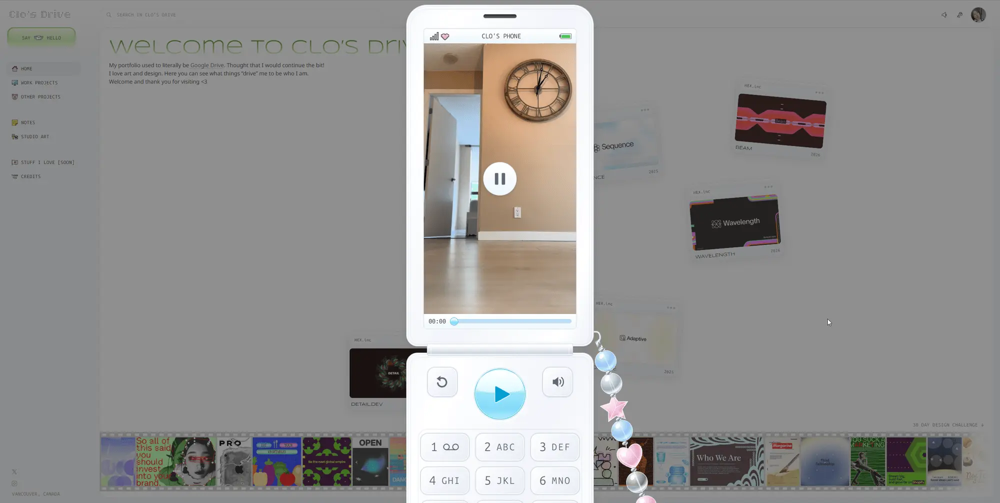

Clo Wang
- Личные сайты и портфолио
- Дизайнер
- Минимализм
- Игривый
- Утилитарный техно
- Сайт жив

Что это
Портфолио Кло Ванг, графического дизайнера из Ванкувера, устроенное как Google Диск: слева папки, сверху поиск, на рабочем столе — разбросанные файлы-проекты, внизу плёнка с кадрами. Внутри — флип-телефон с видео, звуки клавиш и цепочка бус, реагирующая на курсор. Оригинальный, наполненный деталями и эффектами сайт Кло Ванг — дизайнера из Ванкувера.
Чем интересен
- Сайт — пародия на Google Диск: вкладка называется «Clo's Drive», слева папки Home / Work projects / Other projects / Notes / Studio art / Stuff I love [SOON] / Credits, сверху поле «Search in Clo's Drive», а первый экран начинается словами «My portfolio used to literally be Google Drive» со ссылкой на настоящую папку в Drive.
- Рабочий стол собран из карточек-файлов Beam, Sequence, Adaptive, Wavelength и DetailDev: координаты, поворот и смещение задаются случайно, а при расстановке код проверяет площадь пересечения прямоугольников — карточки не наезжают друг на друга.
- Внизу — киноплёнка с перфорацией и кадрами, которая ведёт на «30 day design challenge»; кадры открываются в лайтбоксе, а у самой ленты есть отдельная canvas-анимация появления (класс introCanvas).
- Флип-телефон — не картинка: внутри тег video с файлом /videos/clo-phone-original.mp4 весом 43,7 МБ и постером, работают собственные клавиши, таймлайн и громкость, а на петле висят бусы, реагирующие на курсор.
- Звук сделан на Web Audio: клавиши щёлкают сэмплами phone-press/phone-release, а бусы озвучены двумя записями, в которых код сам находит моменты щелчков по огибающей; звук включается после действия пользователя и запоминается в localStorage.
- SEO почти не настроен: ни Open Graph, ни JSON-LD, /sitemap.xml отдаёт тот же HTML-каркас, а на любой несуществующий адрес сервер отвечает 200 — страницу 404 рисует уже приложение.
- Скриншот владельца совпадает с живой версией: те же подписи, карточки, киноплёнка и открытый флип-телефон; расхождений не видно.
Паспорт
- Домен
- clowang.com
- Тип сайта
- Портфолио
- Категории
- Личные сайты и портфолио
- Подкатегории
- Дизайнер
- Для кого
- Дизайнерам, Агентствам
- Стиль
- Минимализм, Игривый, Утилитарный техно
- Язык
- Английский
- Страна
- Канада, Ванкувер
- Автор
- Clo Wang — дизайнер
- Год
- не указано
- Добавлен в коллекцию
- 29.10.2026
Палитра
-
#8D8E8E— 75% кадра -
#F5F7FB— 10% кадра -
#292322— 3% кадра -
#6F6B61— 3% кадра -
#BFAE9E— 2% кадра
- Режим
- Светлая
- Цвет фона
- Нейтральный
Технические факты
- HTTPS
- да
- Meta viewport
- да
- Title
- Clo's Drive (11 симв.)
- Description
- Explore Clo Wang’s portfolio of brand identities, graphic design, zines, and handmade art, plus notes and credits to the people who inspire the work. (149 симв.)
- Open Graph
- нет
- Структурированные данные
- нет
- Sitemap
- нет: /sitemap.xml отдаёт тот же HTML-каркас приложения
- Robots
- есть: User-agent: *, Allow: /; карта сайта не указана
- Аналитика
- Vercel Web Analytics 2.0.1
- Проверено ссылок
- 9
- Битые ссылки
- нет
- Контакты
- vancarissa@gmail.com (кнопка Say hey hello), X @clo_wang, Instagram @clo.wang; телефона и почтового адреса нет
- Юридическая информация
- юридических страниц нет: ни политики конфиденциальности, ни cookie-баннера, ни реквизитов
Технологии с доказательствами
- React 19.2.8 — в /assets/index-D-Ty2C0U.js строка version:`19.2.8` и проверка Lp!==`19.2.8`, createRoot(document.getElementById(`root`)); хуки useActionState, useOptimistic, useEffectEvent
- Vite — HTML подключает /assets/index-D-Ty2C0U.js, /assets/jsx-runtime-Cltr0gcK.js и modulepreload; в бандле __vite__mapDeps и чанки с хешами имён (Home--30kMxsS.js, PhonePlayer-Cg-14o_X.js)
- React Router — в бандле конфигурация маршрутов work-projects, other-projects, credits, notes, studio-art, other-projects/30-day-design-challenge и catch-all NotFound; ссылка на reactrouter.com/en/main/routers/picking-a-router
- CSS Modules — хешированные имена классов _sidebar_1gfz1_1, _page_4rhig_1, _card_1yl4y_10 и карты классов в JS-бандле
- Web Audio API — new AudioContext, decodeAudioData для /sounds/beads-reference-a.wav и -b.wav, exponentialRampToValueAtTime; сэмплы /sounds/phone-press.wav и /sounds/phone-pop-press.wav
- Canvas 2D — canvas.getContext(`2d`), Path2D и requestAnimationFrame в анимации бус; класс introCanvas у киноплёнки
- Vercel — заголовки Server: Vercel, X-Vercel-Cache: HIT, Strict-Transport-Security; 308 с clowang.com на www.clowang.com
- Vercel (@vercel/analytics) 2.0.1 — в бандле строки `@vercel/analytics` и `2.0.1`, запрос /_vercel/insights/script.js
- Шрифты (Noto Sans, Bitcount Prop Double, Syncopate, Pinyon Script, Ubuntu Sans Mono) — 42 блока @font-face и переменные --font-sans/--font-display/--font-mono; woff2 лежат в /fonts/portfolio/
Что смотреть в первую очередь
Начать с флип-телефона: внутри трубки крутится 43-мегабайтное видео, клавиши щёлкают, а бусы на петле реагируют на курсор. Потом — рабочий стол с карточками-файлами и киноплёнка «30 day design challenge» внизу.